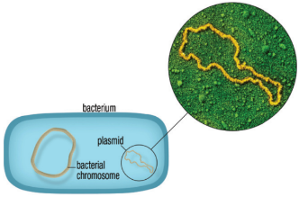
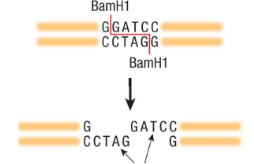
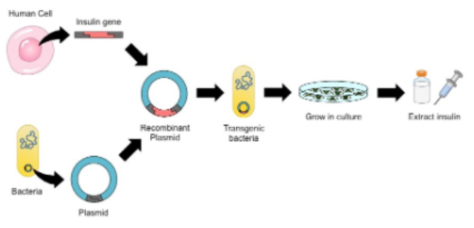
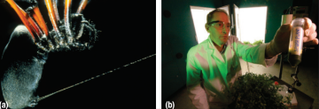

Spider silk and Bt corn are two examples of products that have undergone genetic engineering. Spider silk is primarily used for research in the development of biomaterials, whereas Bt corn is produced commercially.
Callout
Two tools are used to cut out a gene from one organism and insert it into another: plasmids and restriction enzymes.
Recall from Chapter 2 that plasmids are small circular pieces of DNA that can exit and enter bacterial cells. Restriction enzymes are like chemical scissors that can cut DNA at specific sequences.

Plasmids are rings of DNA that have the ability to enter and exit the bacteria cell.

Callout
The use of plasmids and restriction enzymes led to modern recombinant DNA techniques. Recombinant DNA is a fragment of DNA made by combining nucleotide sequences that would not normally be present together in nature.
Recombinant DNA can be made from any two pieces of DNA that have been cut with the same restriction enzyme. For example, if pieces of DNA from two different organisms are exposed to the restriction enzyme BamH1, they will both be cut into pieces ending with the same sticky ends the four unpaired bases CTAG. Then pieces of DNA from each organism can be joined together by matching up these sticky ends.
Geneticists can use this technique to transfer a piece of DNA with a gene of interest from one species into another.

Tabs

(a) This female golden orb-weaver spider (Nephila sp.) produces silk in webs up to 2 m across! The silk produced by these spiders is amongst the strongest known, and their webs often catch small birds. Spider silk is weight for weight, stronger than steel.
(b) This researcher holds a jar containing spider silk extracted from plants. Specific spider genes are inserted into plants, which then produce the proteins necessary to make spider silk. The mass-produced proteins and fibers can then be used in a number of applications.
Changes to the food industry have rarely been immediately welcomed. When milk was first pasteurized, it was greeted with suspicion, despite the fact that unpasteurized milk quite regularly causes illness and death and that the new process eliminated many disease-causing microbes. Similarly, canned goods did not receive a warm welcome when they were first introduced, yet canned food is very common nowadays.
➤In the past, farmers had these same objectives, but traditional methods required generations of trial and error to produce reliable seeds for plants with improved characteristics.
➤Bt corn is a genetically modified (GM) food.